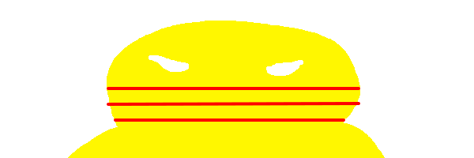
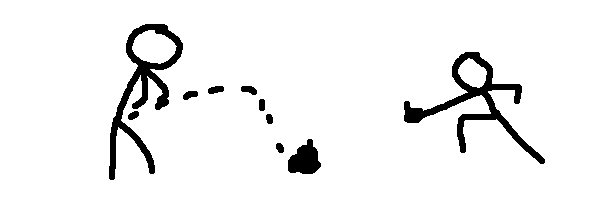

Ai là chủ mưu?
Bộ giáo dục chính là cái lũ chủ mưu của vấn đề này, đang gây ra sự đau đớn cho những học sinh Việt Nam. Chúng chính là lũ ba que, lũ phản động đang điều khiển nền giáo dục Việt Nam chúng ta, bởi vì đối với những người yêu nước, họ sẽ không thể có hành động
thiếu tính nhân văn như vây. Nói chung là lũ làm trong bộ giáo dục là một lũ phản động, sống ăn bám, chết lưu vong, phản bội dân tộc và đang kìm hãm lại sự phát triển của toàn diện của Việt Nam! Chứ đồng bào với nhau thì không thế có những cái hành động bồng
bột đến thế được

Tội ác!
Như đã nói ở trên thì bọn này là lũ phản động thần kinh với mục đích phá hoại đất nước! Chúng ta cần phải nhận ra thành phần này và thải bỏ khỏi môi trường giáo dục vì chúng đang làm ảnh hưởng. Chúng nó tạo ra một môn như vậy để ảnh hưởng tới điểm trong hồ sơ
để kiến Việt Nam ta thiếu đi nhân lực nhằm kìm hãm sự phát triển về nên kinh tế, quân sự! Tình hình này chúng ta khó có thể làm được những gì mà bác Hồ mong đợi, mong chúng ta có thể sánh vai với cường quốc năm châu trên thế giới. Cũng chẳng thể hoàn thành được mục tiêu trở
thành đất nước phát triển được. Với tội ác kinh khủng của chúng nếu cứ để nguyên như vậy, đất nước sẽ bị tàn phá khi đó, bọn sân sau như Mỹ hoặc châu Âu sẽ có thể tiến hành xâm lược nước ta, vậy nên bộ giáo dục chính là bọn việt gian bán nước!

Chúng ta phải làm gì?
Để trừng trị tội ác của mấy thằng làm trong bộ giáo dục và đào tạo. Bọn này phải chịu án tử hình nhưng trước khi đó, mấy thằng việt gian này cần phải chịu tra tấn, lễ tra tấn chúng phải được truyền hình trực tiếp trước toàn bộ dân chúng của Việt Nam chúng ta, và phả
phát động ngày lễ toàn dân tẩy chay ngữ văn. Đảm bảo cho tương lai tươi sáng của dân tộc với một đất nước an ninh, yên bình!